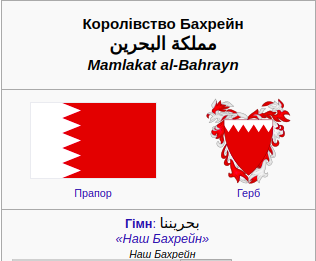

 Бахрейн
Слово «Бахрейн» є вирваним із контексту, його можна перекласти як «двох морів». Повна назва «мамлякату-ль-бахрейн» (مملكة البحرين) означає «королівство двох морів». Стародавні шумери колись вважали його райським островом, на який потрапляли тільки мудрі й сміливі для насолоди вічним життям.
З 1783 року країною править династія Аль-Халіфа, що належить до клану Бані-Утбах, що вигнав зі своєї території персів. З 1861 року, коли був підписаний договір з Британією, до проголошення незалежності в 1971 році Бахрейн фактично був британським протекторатом
У 1971 році Бахрейн став незалежною державою. Національні збори було обрано і розпущено, в 1975 році абсолютну владу отримав емір.